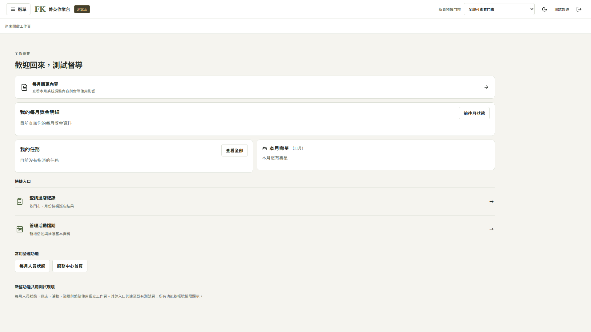
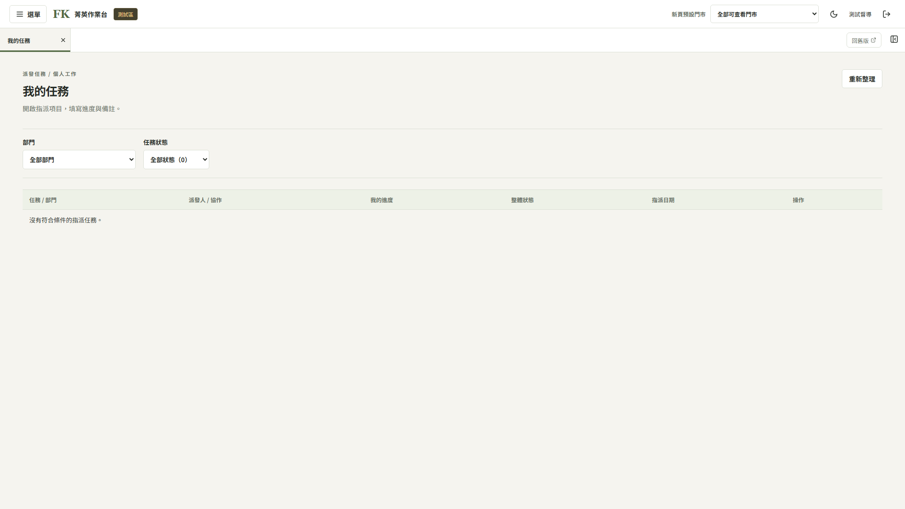
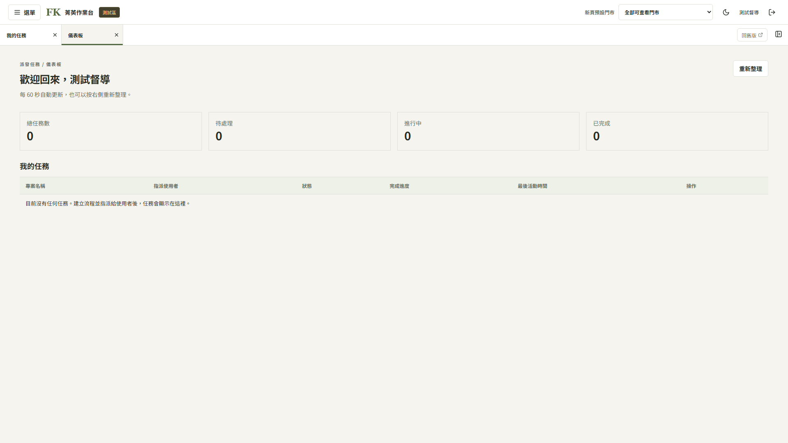
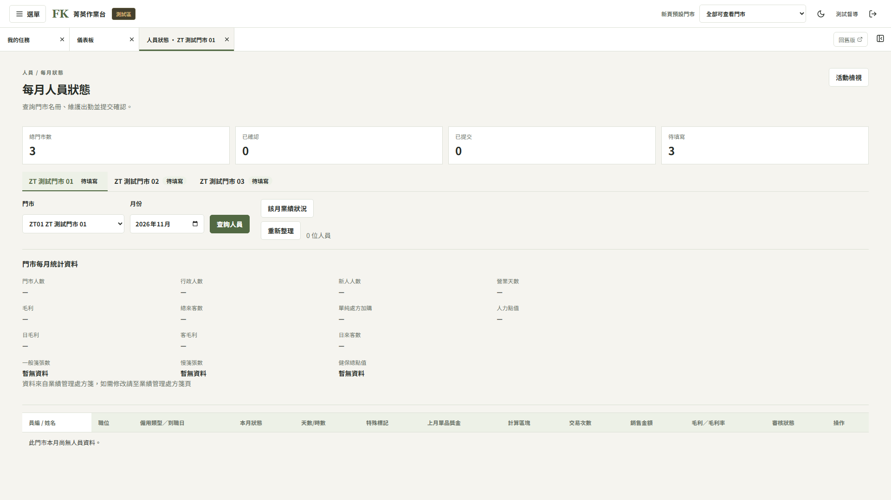
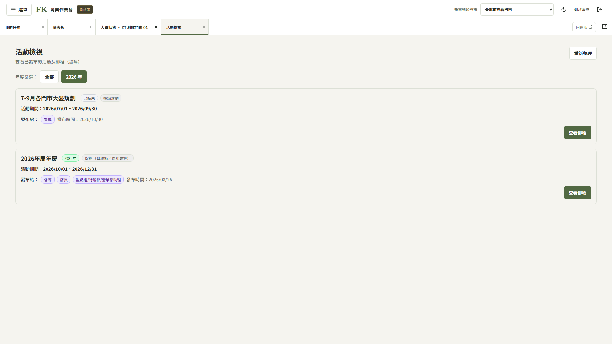
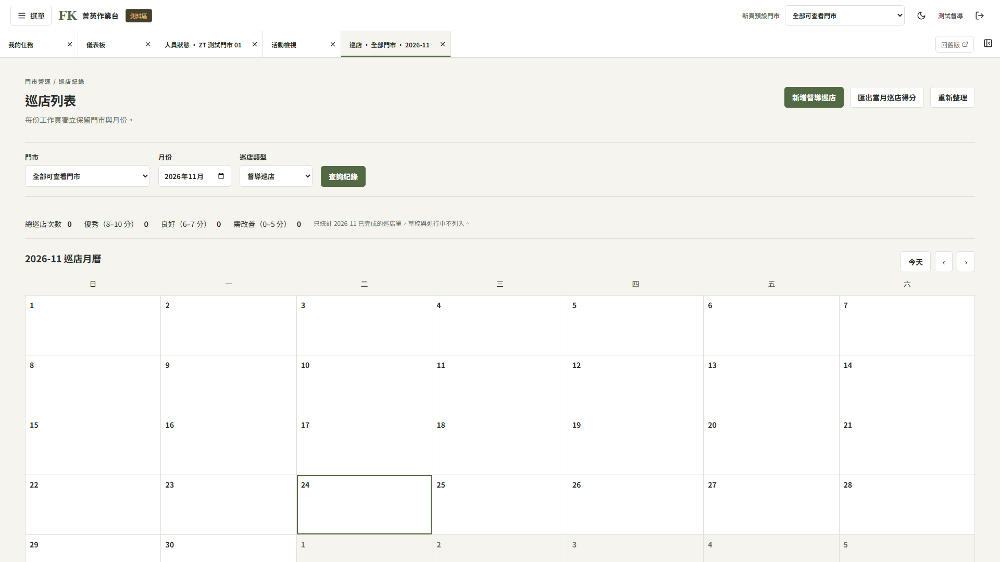
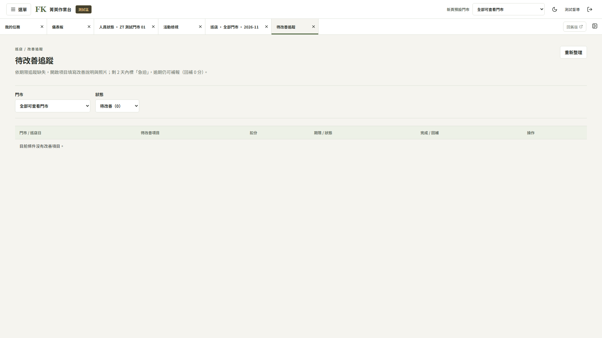
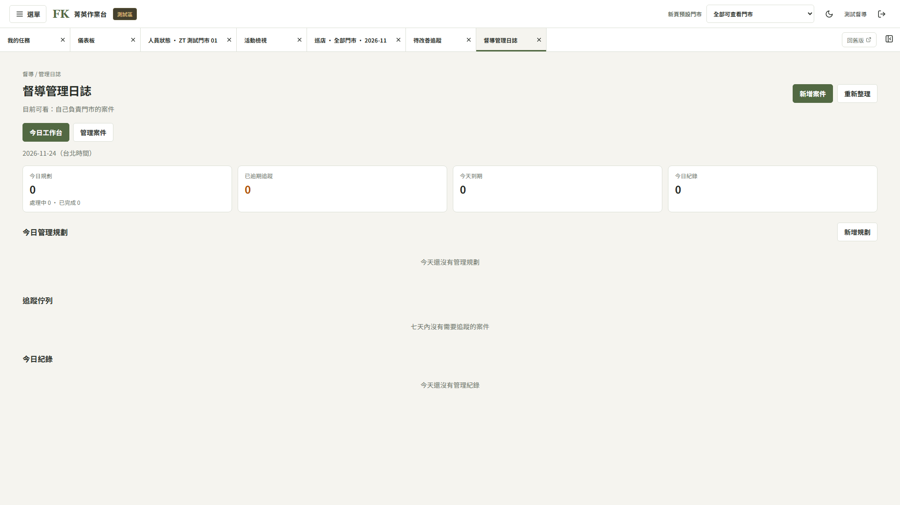
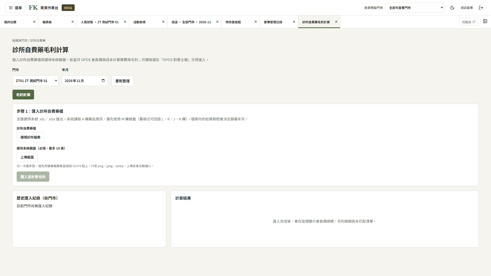
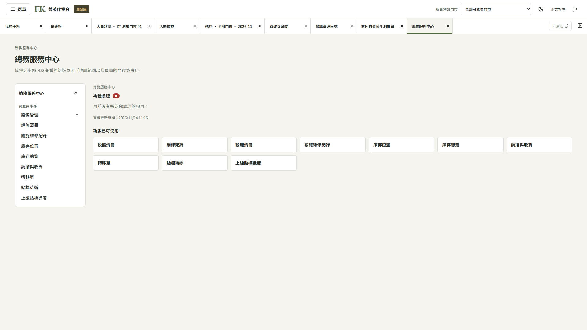

為了讓大家把工作集中在同一個地方、少點幾次連結，我們把系統換成新版工作台，常用的功能都收在左上角的「選單」裡。
上線日：另行通知

一進來就是工作總覽，所有功能集中在左上角「選單」。
跟舊版不同不再是一長串舊版頁面連結，全部改從「選單」進去。

在選單的「派發任務」開啟。你可以同時開好幾頁，用上方分頁來回切換，不用一直重新找。
跟舊版不同改用分頁方式同時開多頁；右上角多了「回舊版」。

用來掌握各門市目前的整體狀況。畫面放著不動也會跟著更新。
跟舊版不同每 60 秒自動更新，也可以手動按「重新整理」。

各門市的每月人員狀況都在這裡。上方的數字會告訴你，還有幾家門市沒填完。
跟舊版不同各門市用頁籤切換，總門市數、已確認、已提交、待填寫一眼看完。

先選年度，就會列出當年度已發布的活動。想看細節，按該筆的「查看排程」。
跟舊版不同可依年度篩選，每筆活動直接顯示期間和發布對象。

用月曆看每天的巡店，旁邊同時有統計數字。需要整月成績時，按「匯出當月巡店得分」。
跟舊版不同月曆和統計放在同一頁；多了「匯出當月巡店得分」；各分頁各自記住所選的門市與月份。

巡店發現的缺失會依期限排列。離期限只剩 2 天內的，會標上「急迫」，提醒你優先處理。
跟舊版不同依期限追蹤；已逾期的仍然可以補報。

今日工作台整個搬到新版，原本的操作都在。語音紀錄第一次使用時，要先同意告知；AI 整理出來的內容，仍要你按「儲存」才算數。
跟舊版不同你可以刪除自己建立、尚未結案的案件，但要填寫原因，系統會留下紀錄。AI 整理每月有使用上限。

把截圖直接貼上就能算，不必先存檔再選檔案。手機上也能操作。
跟舊版不同截圖可直接按 Ctrl+V 貼上；月份不符或重複匯入時，會先跳出確認視窗，讓你決定要不要繼續。

總務相關的申請和進度都從這裡進去。左邊有完整的功能清單，找不到功能時先看這裡。
跟舊版不同新版頁面可以直接點；選單上的數字徽章，點下去只會顯示待辦的項目。
上線日另行通知。在那之前，請照舊使用現在的版本。
點左上角的「選單」，功能都收在裡面。如果有些功能你看不到，可能是你的帳號沒有開放，請聯絡總部系統管理員。
可以。點右上角的「回舊版」就會另開舊版頁面，原本在新版打到一半、還沒存的內容也會保留。
不算。AI 只是幫你整理，一定要你自己看過、按下「儲存」才算數。另外每月 AI 有使用上限，用完就要改手動輸入。
刪除時一定會請你填寫原因，並留下紀錄，已結案的案件也不能刪。如果刪錯了，請聯絡總部系統管理員協助。
督導新版上線說明。上線日另行通知。